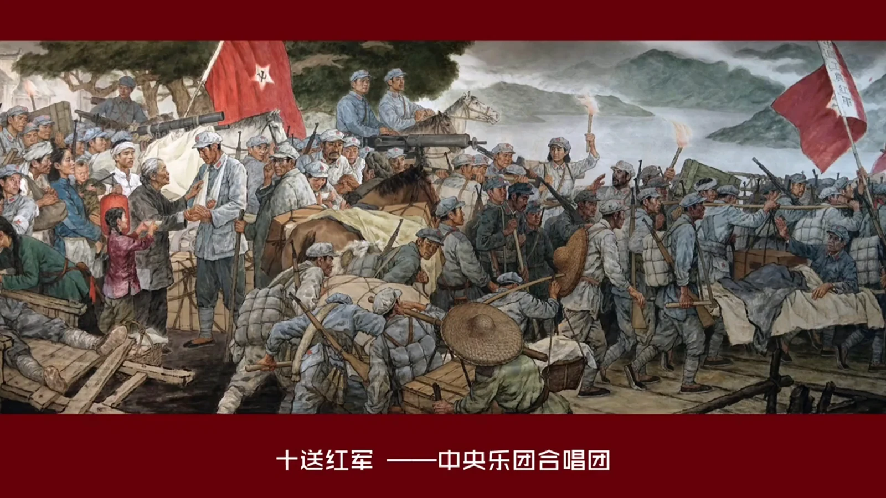

一、长征的意义
- 粉碎了国民党反动派消灭红军的企图
- 保存了党和红军的基干力量，使中国革命转危为安
- 播下了革命种子，铸就了长征精神，打开了中国革命的新局面
1934 — 1936 · 二万五千里
1936年10月 · 甘肃会宁 · 三军会师
“长征是历史纪录上的第一次，
长征是宣言书，长征是宣传队，长征是播种机。”
—— 毛泽东
单衣爬雪山，绝粮过草地——支撑红军的是革命信仰。
按时间先后，依次点击下面的卡片。
“每一代人有每一代人的长征路，每一代人都要走好自己的长征路。”
今天，我们这一代人的长征，就是实现“两个百年”奋斗目标、实现中华民族伟大复兴的中国梦。
